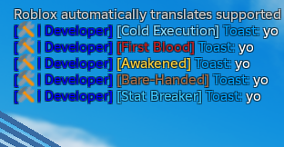
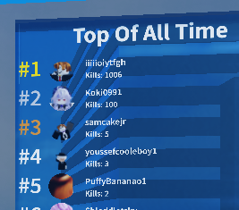
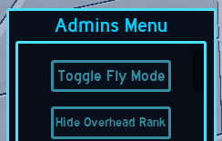
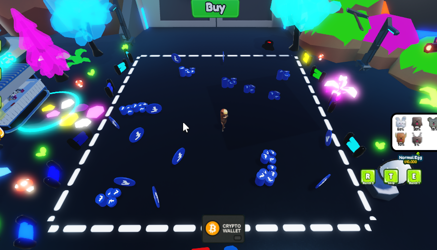
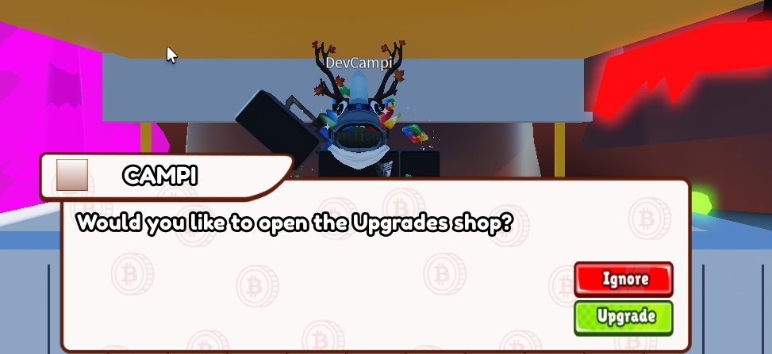
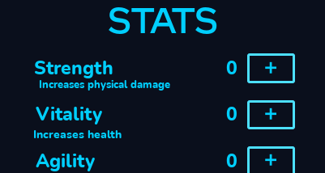
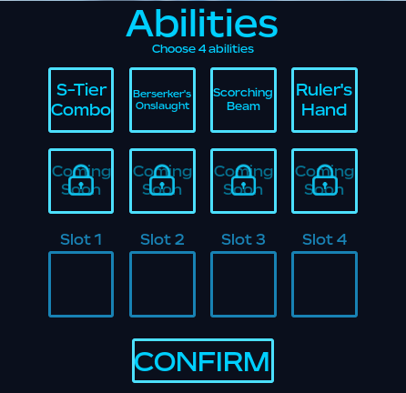

🛠️ Past Work
A showcase of systems and tools I've built for Roblox experiences.
🏷️ Chat Tags

Custom Chat Tags linked to group roles and in-game roles using GetRoleInGroup.
🏆 Leaderboards

Persistent leaderboards with OrderedDatastores, tracking stats globally and in servers.
🛡️ Admin Panels

Admin tools with Kick, Ban, and Announce functionality for dev support, as well as many more custom functions tailored to your personal experience.
💰 Coin Pile System
Randomized coin pile spawner with HP, position logic, value ranges, and visuals.
🎛️ Frontend Polish with Tweening
Created smooth UI transitions using Roblox’s TweenService for menus, popups, and notifications, aswell as subtle camera movement to provide an immersive experience.
💻"Stats" page
Created a stats page, scaling various damage types (m1 and ability) as well as things like speed and cooldown reduction according to player stats.
Abilities Page
Created an abilities page, enabling the user to select and use functional abilities, scaling damage and cooldown with their stats.
NPC Pathfinding
I created an NPC pathfinding system like you see in many roblox games, especially things like bandit beaters, where the NPC will chase a player when it gets hit or can be configured to agro on a nearby player.